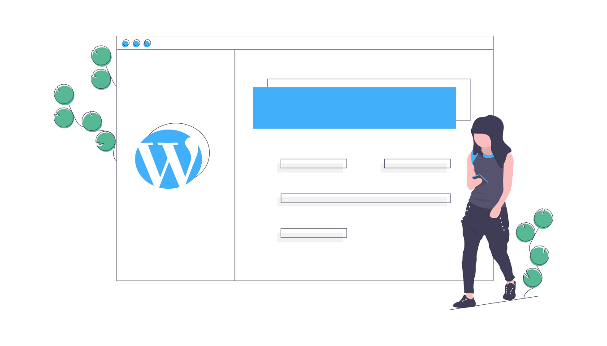
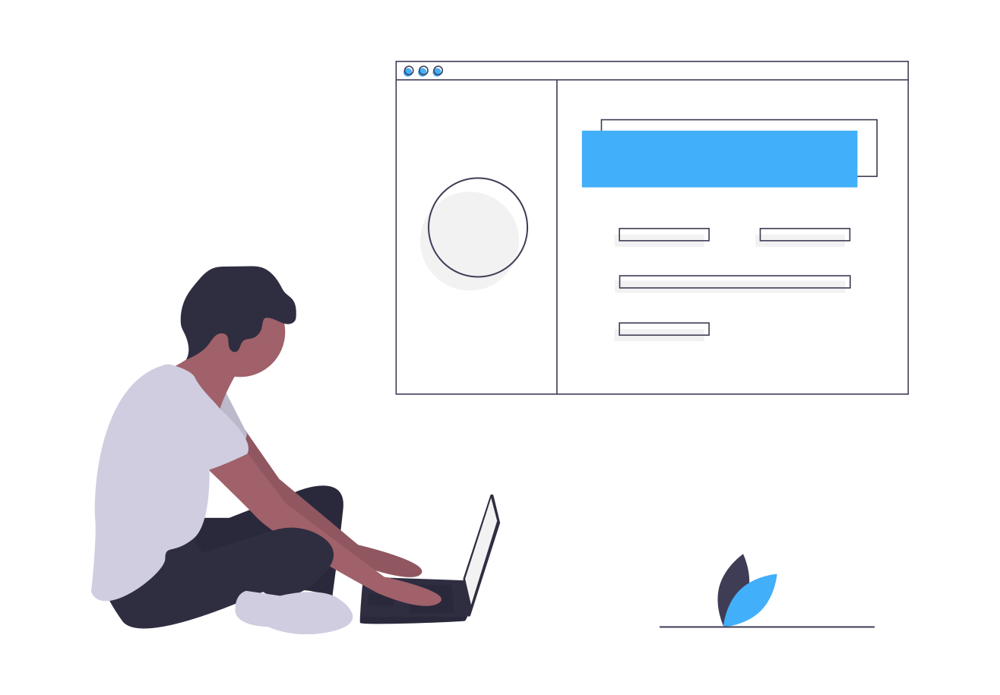

Common WordPress Maintenance Woes 🌩️
Healthy WordPress
is the goal 👍👌

Maintenance Strategies
Locked down 🔒 vs open 🔓
Locked down 🔒 options
- Plugins/themes managed by developers via git.
- Deploy to test, development and production environments.
Trellis 🔗 roots.io/trellis
Pantheon 🔗 pantheon.io
Open 🔓 options
- Plugins/themes open by everyone
- Maintenance handled directly on production environment
ManageWP 🔗 managewp.com
Bash scripts, WP-CLI and SSH
Warning ⚠️
No WordPress maintenance solution is perfect.
Open strategies work for the average Joe ☕
Most WordPress sites
run just fine if:
- Regular backups
- Regular WordPress security and plugin updates
- Hosted with a reputable WordPress host provider
with a WordPress Developer. 
Top 5 common WordPress maintenance woes and how to overcome them
#1
Infrequently updates.
- Less secure
- More chance of update issues
Recommendations
- Don't do manual updates, automate! 🤖
- Pick a time and schedule them. 🕘
15 09 * * 3 captaincore update @production.updates-on --fleet
# update-everything.sh
wp plugin update --all
wp theme update --all
wp plugin update --all --skip-plugins --skip-themes
wp theme update --all --skip-plugins --skip-themes
wp core update
wp core update-db
wp core update-db --networkBonus WP-CLI Tip
echo "<?php define( 'WP_ADMIN', true ); ?>" > define-wp-admin.php
wp theme update --all --require="define-wp-admin.php"
wp plugin update --all --require="define-wp-admin.php"#2
Theme and plugins without license keys.
- Less secure
- Required to receive updates
Recommendations
- Every quarter hunt 👀 for outdated themes/plugins and resolve the underlying issue.
- Make a list 📝 of themes/plugins with known issues.
Manually override paid plugins with SSH
- Upload zip of paid plugin to public location or generate one on the fly
- On destination site run
wp plugin install $plugin_url --force
Generating plugin zip on the fly
# plugins-zip.sh
plugins=(plugin-slug-1 plugin-slug-2 plugin-slug-3)
cd wp-content/plugins
for plugin in ${plugins[@]}; do
zip -r ${plugin}.zip $plugin
donessh user@source-address "bash -s" < plugins-zip.shssh user@destination-address "wp plugin install $plugin_url --force"#3
Dialogs after updates.
- Annoying popups
- Required to fully finish updates
Recommendations
Solve with SSH/WP-CLI automation.wp wc update # Runs WooCommerce database upgradeswp core update # Updated WordPress core
wp core update-db # Runs WordPress database upgrades#4
Outdated PHP code.
Recommendations
- Use a web host that supports switching between PHP versions
- Upgrade PHP on your schedule, before it's automatically updated
Tips to resolve
outdated PHP code
- Update all plugins and themes.
- Use a web host which supports latest PHP.
- Google error messages.
- Get help. Consult with a PHP developer.
#5
Errors after WordPress updates.
- Plugin conflicts.
- Website behavior changes.
Recommendations
- Check for errors after updates
- Track file changes
Check for errors after updates
- Use a site monitor
- WordPress 5.2 includes recovery mode. Define
RECOVERY_MODE_EMAILwithin wp-config.php
define( 'RECOVERY_MODE_EMAIL', 'email@domain.tld' );Track file changes with git
- Automatic nightly SFTP sync and git repository check in (themes and plugins only)
- If no changes, then no new commit.
- Can be used to roll back any theme/plugin to a previous version
- Not a replacement for backups however solves "What changed and when?"
Any git repo can be given an interface


Taken from my WordPress management toolkit is open source and currently ⚠️ alpha development stage.
CaptainCore 🔗 captaincore.io